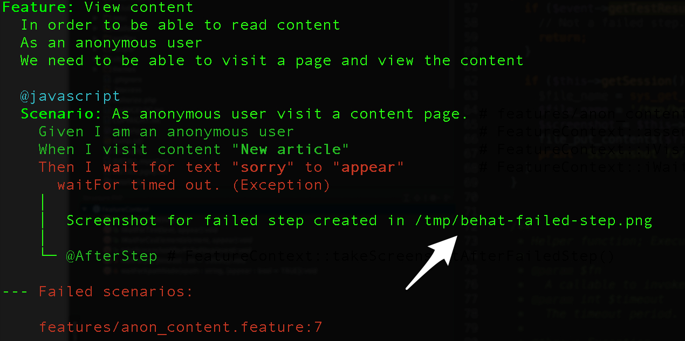
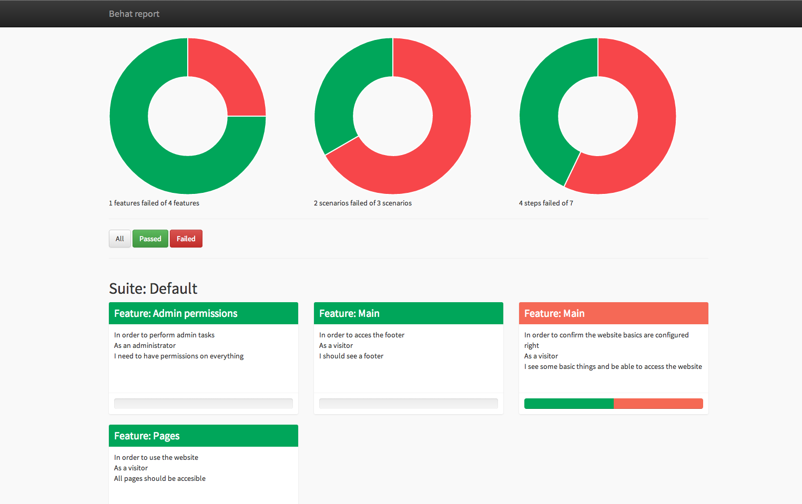

Introduction to Behat
Make your app behave
A talk by Rodrigo Aguilera / @marinero
Hello There
https://www.drupal.org/u/rodrigoaguilera

Agenda
- Behaviour driven development
- Behat + Drupal
- Quickstart your install
- Speaking my language
- Awesome tricks
Behaviour driven development
What is BDD?
Get closer to the stakeholders
Make development more conversational
Make software that matters
Behat + Drupal
What is behat?
BDD framework written in PHP.
- Uses gherkin as a business readable and domain specific language
- Mink as a browser controller
- Free software
- Flexible (not only browsers)
- Constitutes a challenge
Gherkin syntax
Feature: Banana Calculator
In order to keep a stock of bananas
As Bob the Banana merchant,
I want a calculator that can add the amount of bananas so that I can know how many bananas I currently have
Scenario: Add 2 banana amounts
Given I have 3 Bananas
When I add 5 Bananas
Then I should have 8 Bananas
Drawbacks
- Slow.
- Understanding of the domain.
- Requires effort to make them robust.
Quickstart your install
Behat is just a PHP library that can be installed with composer
composer require behat/behat
composer require drupal/drupal-extension='~3.1'
Initialize the skeleton
vendor/bin/behat --init
behat.yml
default:
suites:
default:
contexts:
- Drupal\DrupalExtension\Context\DrupalContext
extensions:
Behat\MinkExtension:
goutte: ~
base_url: http://example.org/ # Replace with your site's URL
Drupal\DrupalExtension:
blackbox: ~
Steps available
vendor/bin/behat -di
- Given I am logged in as a user with the :role role
- Given I am viewing a/an :type (content )with the title :title
- Then I should see the error message( containing) :message
Speaking my language
Behat and gherkin
Translates each step in a PHP callback
Speaking my language
use Drupal\DrupalExtension\Context\RawDrupalContext;
use Behat\Behat\Context\SnippetAcceptingContext;
/**
* Defines application features from the specific context.
*/
class FeatureContext extends RawDrupalContext implements SnippetAcceptingContext {
private $bananas
/**
* @Given /^I have (\d+) bananas$/
*/
public function iHaveBananas($b) {
$this->bananas = $b;
}
...
}
Speaking my language
/**
* @When /^I add (\d+) bananas$/
*/
public function iAddBananas($b) {
$this->bananas += $b;
}
Speaking my language
/**
* @Them /^I should have (\d+) bananas$/
*/
public function iShouldHaveBananas($b) {
assertEquals($b, $this->bananas);
}
Command a browser - Mink
Fill out forms, click on buttons, check the output.Command a browser
$session = $this->getSession();
$session->visit('http://drupal.org');
$session->getStatusCode();
$session->getCurrentUrl();
$page = $session->getPage();
$e = $page->find('css', li:nth-child(4) a);
$e->getText();
$e->getAttribute('href');
$e->click();
Awesome tricks
- Test in any browser.
- Debug tests
- Nice reports
Test with js enabled
- Goutte driver is only doing curl request
- Control when js is needed using @javascript tags in your scenarios
- Cookies and headers
- Manipulate the page
- Selenium, phantomjs
Test in any browser
- Different js implementations
- Screenshots
Anything is possible
/**
* @Given /^I switch to the first iframe$/
*/
public function iSwitchToTheFirstIframe() {
$javascript = <<<JS
(function(){
var iframes = document.getElementsByTagName('iframe');
var f = iframes[0];
f.id = "no_name_iframe";
})()
JS;
$this->getSession()->executeScript($javascript);
$this->getSession()->switchToIFrame('no_name_iframe');
}
Debugging: Then I break.
Debugging - screenshot
HTML reports
https://github.com/dutchiexl/BehatHtmlFormatterPlugin
Behat and drupal core.
[Meta] Use Behat for validation testing https://www.drupal.org/node/2232271JS testing have been commited recently.
It's so easy!
Very good documentation.
Interesting references
Questions

THE END
Thank you.
- http://docs.behat.org